TKRForm
導入・使用マニュアル
Ver 0.3 ／ 2026 年 11 月
タカラシスコム
https://tkrs.jp/
目次
- 1. TKRForm とは
- 1.1 できること
- 1.2 構成
- 1.3 動作環境
- 2. インストールと初期設定
- 2.1 インストール
- 2.2 初回セットアップ
- 2.3 ブラウザ拡張の導入
- 2.4 他のソフトからの移行
- 3. 毎日の使い方
- 3.1 起動とロック解除
- 3.2 ログインの保存
- 3.3 ログイン（自動記入）
- 3.4 ポップアップ
- 3.5 パスワードの生成
- 3.6 ホーム
- 4. エディタ
- 5. プロフィールとメモ
- 6. パスキー
- 7. セキュリティセンター
- 8. 設定
- 9. バックアップと別の PC への移行
- 10. 困ったときは
- 11. アンインストール
- 付録 ショートカットキーとデータの保存場所
1. TKRForm とは
TKRForm は、Web サイトの ID とパスワードを安全に保管し、ログイン画面や入力フォームへ自動で記入する Windows 用のパスワード管理ソフトです。
1.1 できること
- パスワードの保管：ID・パスワードなどを暗号化して、この PC の中に保存します。
- 自動保存：Web サイトでログインすると、その ID とパスワードを保存するか尋ねます。
- 自動記入：保存したサイトを開くと、ID とパスワードを入力欄に記入します。
- パスワードの生成：推測されにくいパスワードを作って、そのまま入力欄に入れられます。
- プロフィール：住所・氏名・電話番号などを登録して、申し込みフォームに一括で記入できます。
- パスキー：サイトのパスキーを TKRForm に保存して、パスワードなしでログインできます。
- セキュリティセンター：弱いパスワードや使い回しを見つけて知らせます。
- Windows Hello：顔・指紋・PIN でロックを解除できます。
1.2 構成
TKRForm は、次の 2 つが連携して動きます。
| 部品 | 役割 |
|---|
TKRForm アプリ
（TKRForm.exe） | 保管庫（暗号化したデータ）を管理します。画面右下の通知領域（トレイ）に常駐し、エディタ・設定・セキュリティセンターなどの画面を持ちます。 |
ブラウザ拡張
（Chrome / Edge） | Web ページでの自動保存・自動記入、ツールバーのポップアップ、パスワード生成を担当します。データはアプリから必要な分だけ受け取ります。 |
TKRForm アプリは、画面右下のトレイ（隠れているときは ^ を押すと出ます）に鍵穴のアイコンで常駐します。アイコンを押すと、次のメニューが開きます。ダブルクリックするとエディタが開きます。
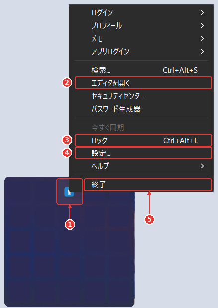
図 1-1 トレイのメニュー- トレイの TKRForm アイコン
- エディタを開く
- ロック（ロック中は「ログイン」）
- 設定
- TKRForm を終了
データは PC の外に出ません保管庫はマスターパスワードで暗号化され、この PC の中にだけ保存されます（同期の機能を自分で設定した場合を除きます）。マスターパスワードそのものも保存されません。
1.3 動作環境
| 項目 | 条件 |
|---|
| OS | Windows 10（22H2）／ Windows 11（64 ビット） |
| ブラウザ | Google Chrome、Microsoft Edge（最新版） |
| その他 | Microsoft Edge WebView2 ランタイム（Windows 11 には標準で入っています） |
| Windows Hello（任意） | Windows の「サインイン オプション」で PIN・顔・指紋のいずれかを設定済みであること |
2. インストールと初期設定
2.1 インストール
- インストーラ
tkrform-setup-0.3.0.exe をダブルクリックします。
- 「Windows によって PC が保護されました」と表示された場合は、「詳細情報」を押し（図 2-1 ①）、下に出る「実行」を押します。インターネットから入手したばかりのソフトに表示される確認です。
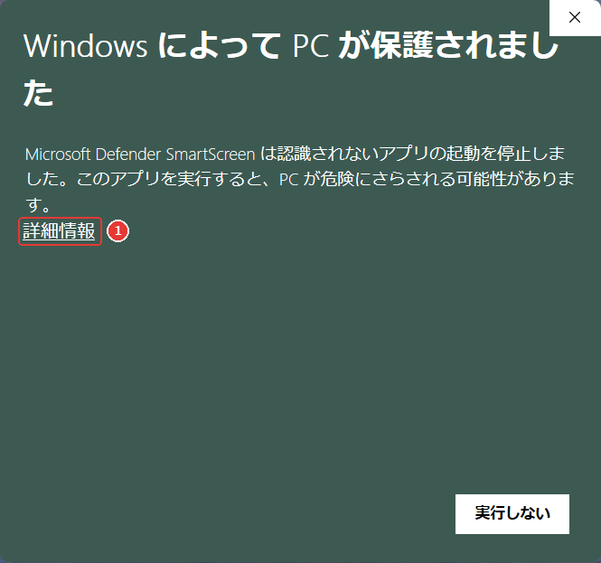
図 2-1 SmartScreen の確認- 「詳細情報」を押すと、「実行」のボタンが表示されます。
- インストール先はそのままで「次へ」を押します（図 2-2）。管理者の権限は必要ありません。「フォルダは既に存在します」と表示された場合は「はい」を押します。
- 「Windows の起動時に TKRForm を起動する」は、通常はオンのままにして「次へ」を押します（図 2-3）。
- 内容を確かめて「インストール」を押します（図 2-4）。
- 最後の画面で「TKRForm を起動してセットアップする」にチェックを入れたまま「完了」を押します。
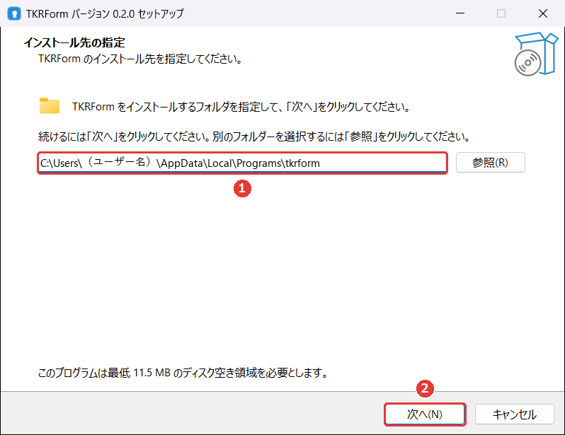
図 2-2 インストール先- インストール先（変更しなくて構いません）
- 「次へ」
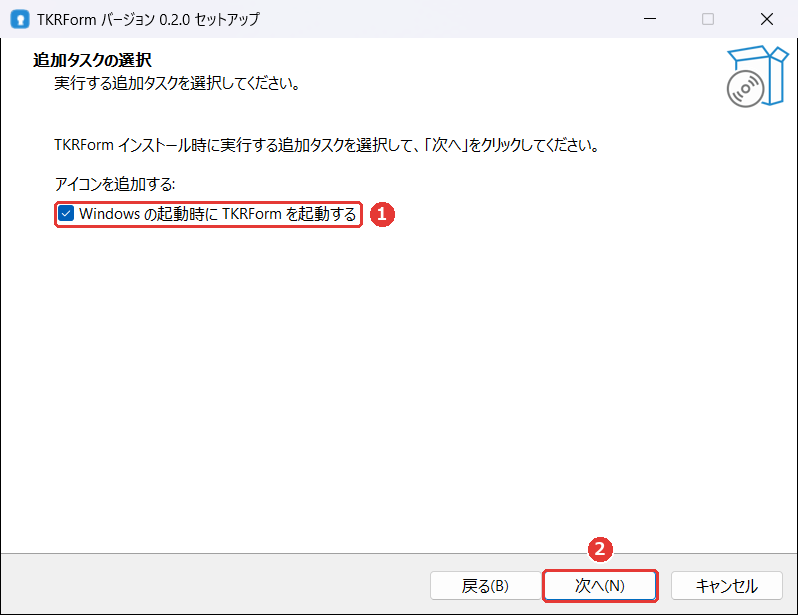
図 2-3 追加タスク- Windows の起動時に TKRForm を起動する
- 「次へ」
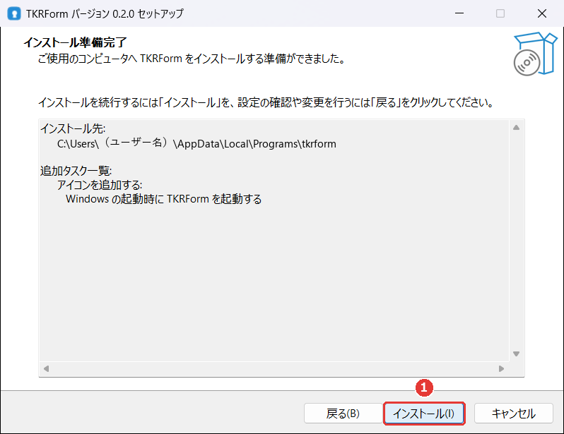
図 2-4 インストールの準備完了- 「インストール」を押すと、インストールが始まります。
インストール先C:\Users\（ユーザー名）\AppData\Local\Programs\tkrform に入ります。インストールしたユーザーだけが使えます。
2.2 初回セットアップ
初めて起動すると、セットアップの画面が開きます。
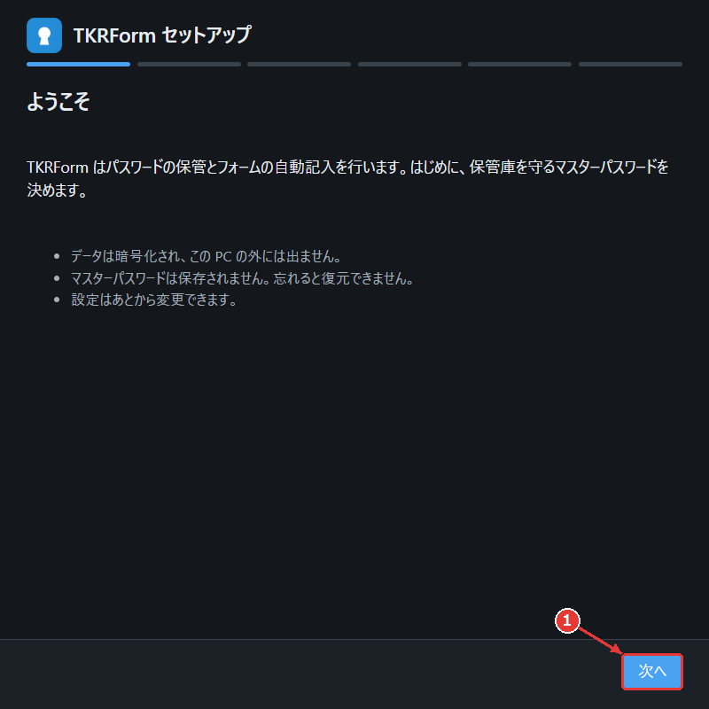
図 2-5 ようこそ画面- 「次へ」を押して進みます。
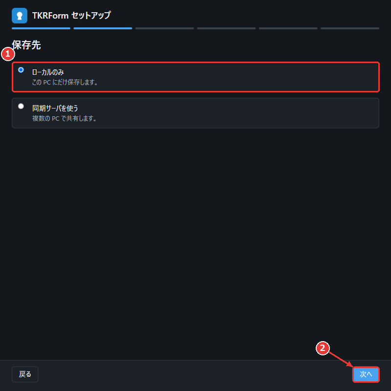
図 2-6 保存先の選択- 「ローカルのみ」を選びます。
- 「次へ」を押します。
- ようこそ画面で「次へ」を押します（図 2-5 ①）。
- 保存先で「ローカルのみ」を選び（図 2-6 ①）、「次へ」を押します（図 2-6 ②）。データはこの PC にだけ保存されます。複数の PC で共有する同期サーバを使う場合だけ「同期サーバを使う」を選びます。
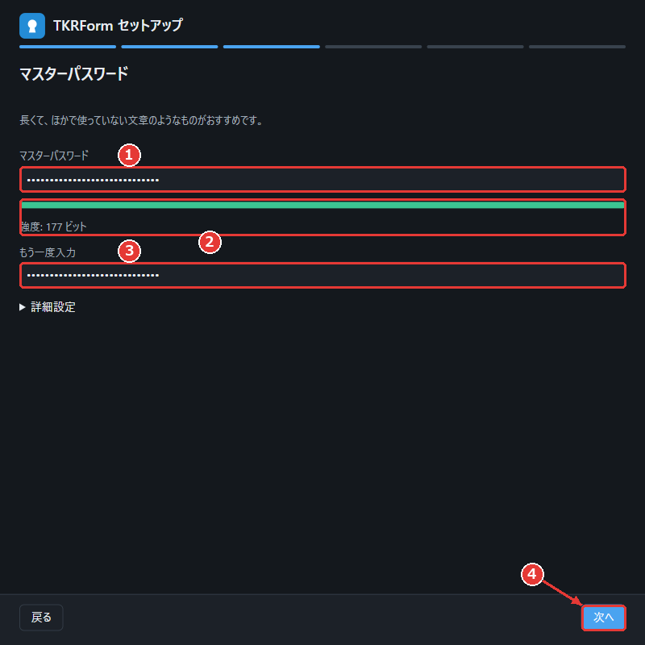
図 2-7 マスターパスワードの設定- マスターパスワードを入力します。
- 強さの目安。緑のバーが長いほど安全です。
- 同じパスワードをもう一度入力します。
- 「次へ」を押します。
- マスターパスワードを入力します（①）。保管庫を開くための、ただ 1 つのパスワードです。
- 緑のバーと「強度」で強さを確かめます（②）。バーが長いほど破られにくいパスワードです。
- 同じパスワードをもう一度入力し（③）、「次へ」を押します（④）。続く画面で必要ならヒントを入力し、保管庫を作成します。
マスターパスワードは忘れないでくださいマスターパスワードは TKRForm にも保存されないため、忘れると保管庫を開く方法はありません（タカラシスコムでも復元できません）。長く、他で使っていない文字列にし、紙に書いて安全な場所に保管するなどしてください。
2.3 ブラウザ拡張の導入
ブラウザ拡張は、Chrome ウェブストアから入れます。Chrome と Microsoft Edge のどちらでも使えます。
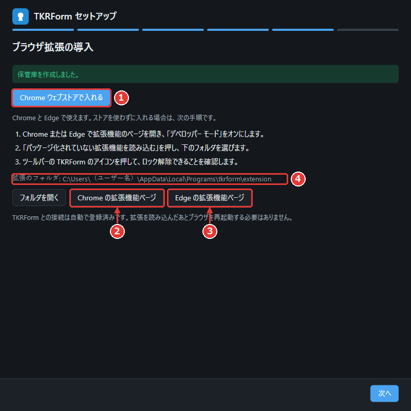
図 2-8 ブラウザ拡張の導入の案内（セットアップの最後）- 「Chrome ウェブストアで入れる」。ストアの TKRForm のページが開きます。
- Chrome の拡張機能ページ（ストアを使わない場合）
- Edge の拡張機能ページ（ストアを使わない場合）
- 拡張のフォルダ（ストアを使わない場合に読み込むフォルダ）
- セットアップの最後の画面で、「Chrome ウェブストアで入れる」を押します（図 2-8 ①）。Chrome で、Chrome ウェブストアの TKRForm のページが開きます。あとから入れる場合は、Chrome で
https://chromewebstore.google.com/detail/fkhigfffleejckieoikjboabidigggee を開くか、ストアで「TKRForm」を検索します。
- 「Chrome に追加」を押し（図 2-9 ①）、確認の画面で「拡張機能を追加」を押します。
- ツールバーのパズルの形のアイコンを押し（図 2-10 ①）、一覧の TKRForm の横のピンを押して（②）、ツールバーに固定します。固定すると、ピンが青緑色になり、ツールバーに TKRForm のアイコンが表示されます（③）。
- ツールバーの TKRForm のアイコンを押し、マスターパスワード（または Windows Hello）でロックを解除できれば完了です。
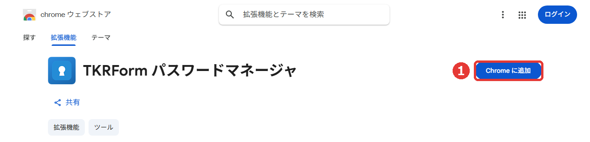
図 2-9 Chrome ウェブストアの TKRForm のページ- 「Chrome に追加」を押します。
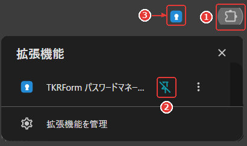
図 2-10 ツールバーへの固定- パズルの形のアイコン（拡張機能）
- ピン。押すとツールバーに固定します。
- ツールバーに固定された TKRForm のアイコン
Microsoft Edge で使う場合Edge で上のストアのページを開くと、ページの上に「他のストアからの拡張機能を許可する」と表示されます。「拡張機能を許可する」を押してから、「Chrome に追加」（Edge では「入手」と表示されることもあります）を押してください。許可の操作は最初の 1 回だけです。
ブラウザの再起動は不要ですTKRForm アプリとブラウザ拡張の接続は、インストール時に自動で設定されます。拡張の更新も、ストアから自動で届きます。
ストアを使わずに入れる場合
社内のネットワークの決まりなどで Chrome ウェブストアを使えない場合は、TKRForm に同梱の拡張を、直接読み込むこともできます。この方法では、拡張の更新は自動では届きません。
- 「Chrome の拡張機能ページ」（図 2-8 ②。Edge の場合は ③）を押します。
- 右上の「デベロッパー モード」をオンにします（図 2-11 ①）。
- 「パッケージ化されていない拡張機能を読み込む」を押し（図 2-11 ②）、「拡張のフォルダ」（図 2-8 ④。インストール先の
extension フォルダ）を選びます。
- 一覧に「TKRForm パスワードマネージャ」が表示され、右下のスイッチがオンになっていることを確かめます（図 2-11 ③）。そのあと、上の手順 3 から進めます。
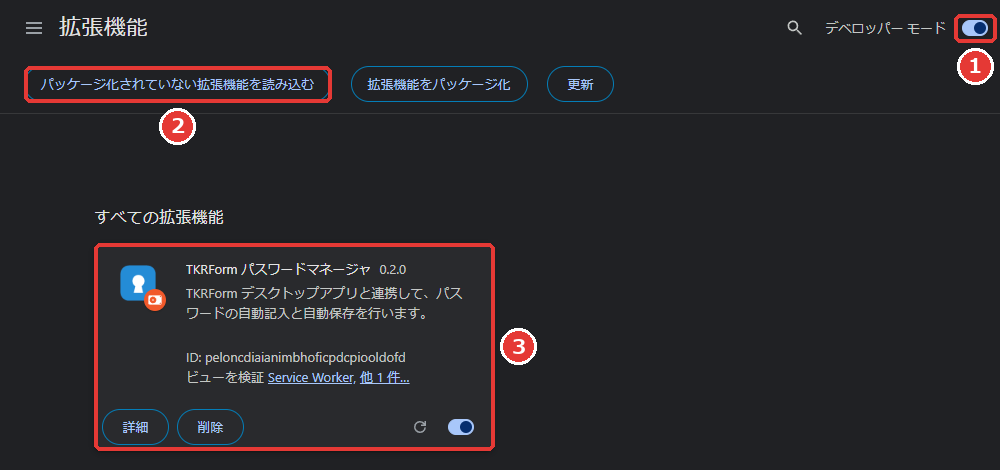
図 2-11 Chrome の拡張機能ページ（ストアを使わない場合）- 「デベロッパー モード」をオンにします。
- 「パッケージ化されていない拡張機能を読み込む」を押し、拡張のフォルダを選びます。
- 読み込まれた TKRForm。スイッチがオンになっていれば使えます。
2.4 他のソフトからの移行（インポート）
他のパスワード管理ソフトやブラウザに保存しているパスワードは、CSV ファイルを経由して取り込めます。
- 移行元のソフトで、パスワードを CSV 形式で書き出します（エクスポート）。
- TKRForm のエディタを開き、右上の「その他 ▼」→「インポート...」を選びます。
- 書き出した CSV ファイルを選びます。形式（Chrome / Edge / Firefox / RoboForm / 1Password / LastPass / Bitwarden など）は自動で判定されます（図 2-12 ②）。
- 「列の対応付け」で、CSV の列が正しい項目（名前・URL・ユーザー ID・パスワードなど）に対応しているかを確かめます（図 2-12 ③）。下へスクロールすると取り込む内容の見本が表示されるので、確認して「取り込む」を押します。
- 取り込んだログインは「インポート 年-月-日」のフォルダに入ります。
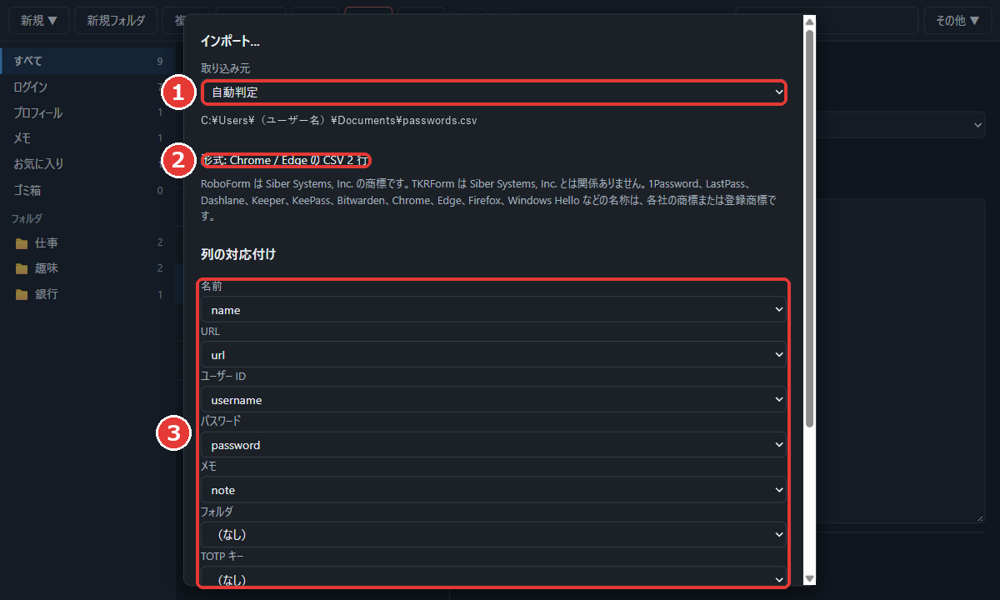
図 2-12 インポート- 取り込み元。通常は「自動判定」のままで構いません。
- 判定した形式と件数
- 列の対応付け。CSV の列と TKRForm の項目の組み合わせです。
書き出した CSV は必ず削除してくださいCSV ファイルにはパスワードが暗号化されずに入っています。取り込みが済んだら、ごみ箱からも削除してください。
パスキーは移せません他のソフトに保存したパスキーは、仕組み上書き出せません。各サイトで TKRForm のパスキーを作り直してください（6 章）。
3. 毎日の使い方
3.1 起動とロック解除
TKRForm は Windows の起動時に自動で起動し、ロックした状態でトレイに常駐します。起動時には何も表示されません。保管庫が必要な操作（ログイン、エディタを開くなど）をしたときに、ロックの解除を求めます。
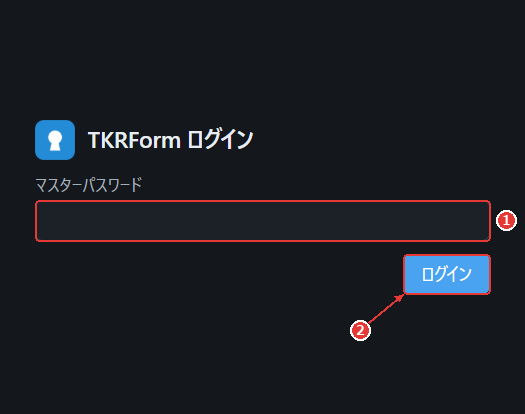
図 3-1 アプリのログイン画面- マスターパスワードを入力します。
- 「ログイン」でロックを解除します。
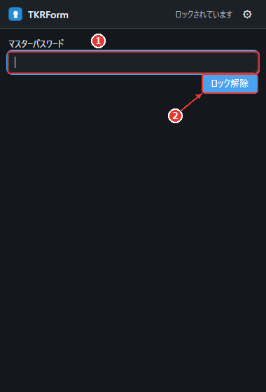
図 3-2 ロック中のポップアップ- マスターパスワードを入力します。
- 「ロック解除」を押します。
- マスターパスワードを入力して「ログイン」（ポップアップでは「ロック解除」）を押します。
- Windows Hello を有効にしている場合は、ログイン画面やポップアップを開くと自動で Windows Hello の確認が始まります（8 章）。
- しばらく操作しないとき、Windows をロックしたとき、スリープしたときは、自動でロックされます（時間は設定で変えられます）。
- 手動でロックするには、ポップアップの歯車メニューまたはトレイのメニュー（図 1-1 ③）から「ロック」を選びます。
3.2 ログインの保存（自動保存）
Web サイトで ID とパスワードを入力してログインすると、画面の右上に保存ダイアログが表示されます。
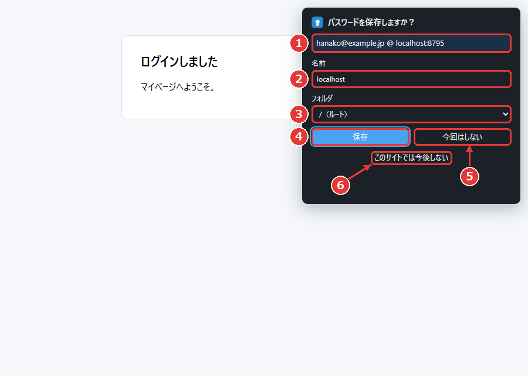
図 3-3 保存ダイアログ- 保存する ID とサイト
- 名前（あとから変更できます）
- 保存先のフォルダ
- 保存する
- 今回だけ保存しない
- このサイトでは今後たずねない
- 保存：名前とフォルダを確認して保存します。名前は後からエディタで変えられます。
- 今回はしない：今回だけ保存しません。
- このサイトでは今後しない：このサイトでは保存ダイアログを出さなくなります（設定で元に戻せます）。
すでに保存しているサイトでパスワードを変えた場合は「パスワードを更新しますか？」と表示されます（図 3-4）。「更新」を押すと、保存しているパスワードが新しいものに置き換わります。別のアカウントとして保存したいときは、「更新ではなく、新しいログインとして保存する」にチェックを入れて名前を入力します。
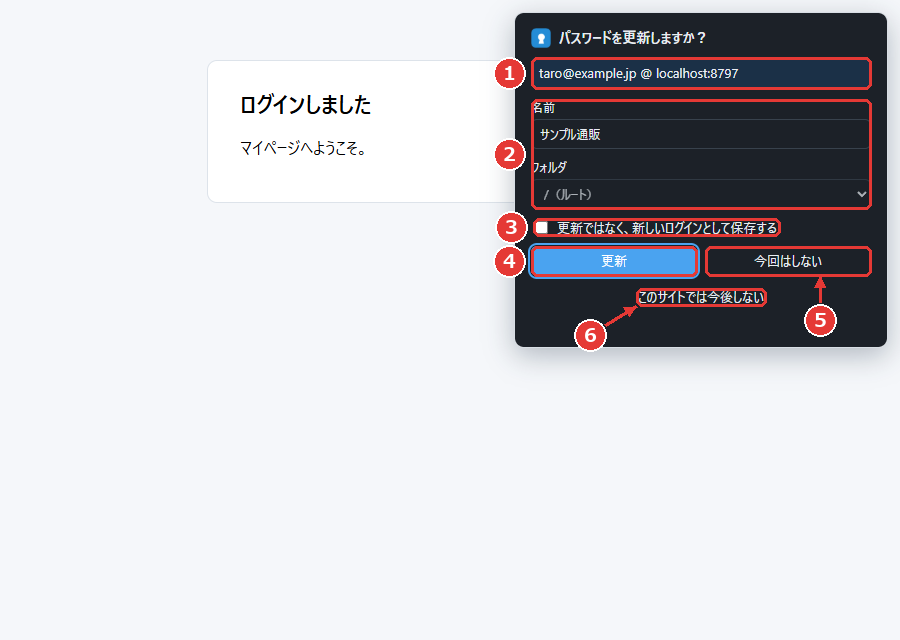
図 3-4 更新ダイアログ- 更新する ID とサイト
- 名前と保存先のフォルダ
- 別のログインとして保存するときはチェック
- パスワードを更新する
- 今回だけ更新しない
- このサイトでは今後たずねない
送信せずに保存したいとき入力欄に入力したあと、ツールバーの TKRForm のアイコンからポップアップを開き、「フォームの入力内容を保存」を押すと、ログインボタンを押さずに保存できます。ラジオボタンや選択欄を含め、入力したすべての欄が保存されます（図 3-5）。
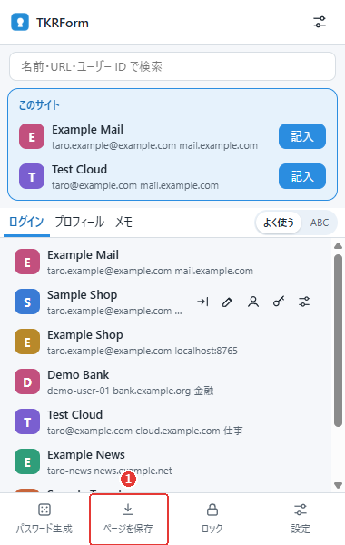
図 3-5 「フォームの入力内容を保存」- Web ページを開いているときに、下の操作のバーに出ます
3.3 ログイン（自動記入）
保存したサイトのログイン画面で入力欄をクリックすると、入力欄の下に候補のメニューが表示されます。
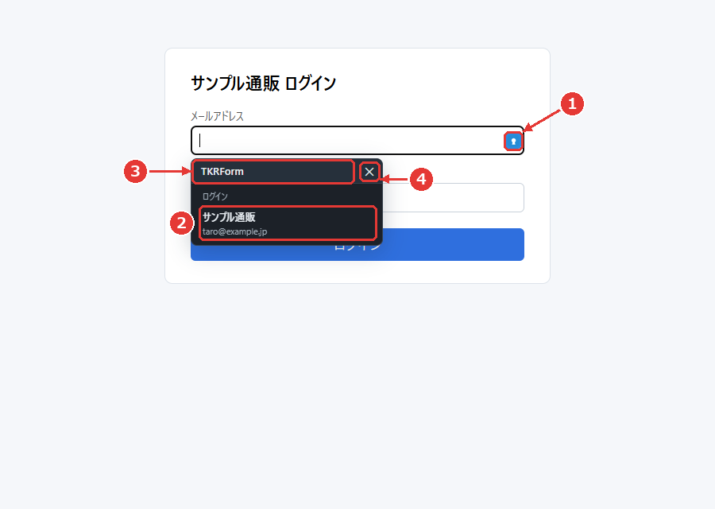
図 3-6 入力欄の候補メニュー- 入力欄の TKRForm アイコン。押すとメニューを開きます。
- 候補。押すと記入してログインします。
- 見出しの帯。つかんでドラッグすると動かせます。
- × でメニューを閉じます。
- 候補を選ぶと、ID とパスワードが記入され、ログインまで自動で行います（エディタで「記入後に送信しない」にしたログインは、記入だけします）。
- メニューの上部の帯をつかむと、メニューをドラッグで動かせます。× で閉じると、そのページでは同じ欄に自動では表示されなくなります（入力欄の右端の TKRForm のアイコンで開き直せます）。
- キーボードでは Alt+Shift+F で、いちばん候補の高いログインを記入します。
- ベーシック認証（ブラウザが ID とパスワードを尋ねる小さな画面）にも、保存したログインが自動で入ります。
3.4 ポップアップ
ツールバーの TKRForm のアイコンを押すと、ポップアップが開きます。
開いているページに合うログインがあるときは、いちばん上の「このサイト」の枠に出ます（最大 2 件。合うログインがないときは、枠ごと出ません）。色つきの「記入」のボタンを 1 回押せば済みます。「よく使う」と「ABC」の切り替えは、タブの右端にあります。下の操作のバーには、パスワード生成・ページを保存（Web ページを開いているとき）・ロック・設定があります（歯車のメニューにも同じ操作があります）。
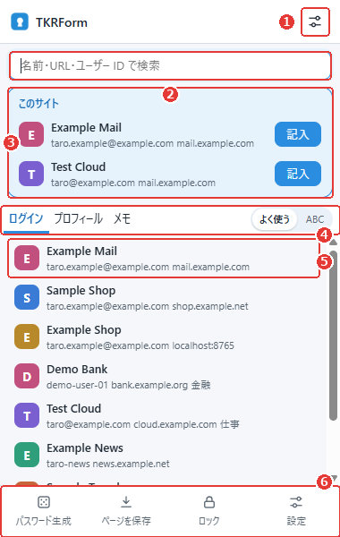
図 3-7 「よく使う」- 歯車メニュー
- 検索欄
- 「このサイト」。開いているページに合うログインが、いちばん上に出ます（合うログインがないときは、枠ごと出ません）。色つきの「記入」を 1 回押せば済みます
- タブ（ログイン・プロフィール・メモ）と、右端の「よく使う」「ABC」の切り替え
- ログインの行。ふだんは何も出ず、マウスを乗せる（またはキーボードでフォーカスする）と操作ボタンが出ます
- 下の操作のバー（パスワード生成・ページを保存・ロック・設定）
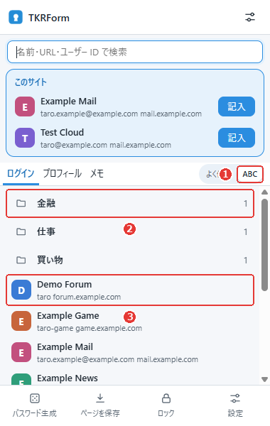
図 3-8 「ABC」（フォルダ表示）- 「ABC」を選んだ状態
- フォルダ。押すと中に入ります（右の数字は件数）
- フォルダに入っていないログイン
| タブ | 内容 |
|---|
| ログイン | よく使う：お気に入りと使った回数の多いログイン（最大 50 件）を、よく使う順に表示します。
ABC：フォルダを上にまとめ、名前の順に表示します。フォルダを押すと中に入ります。
選んだ表示は次回も引き継がれます。 |
| プロフィール | 登録したプロフィール（5 章）を表示します。 |
| メモ | 暗号化して保存したメモを表示します。 |
各行にマウスを乗せると、次のボタンが表示されます（図 3-9）。
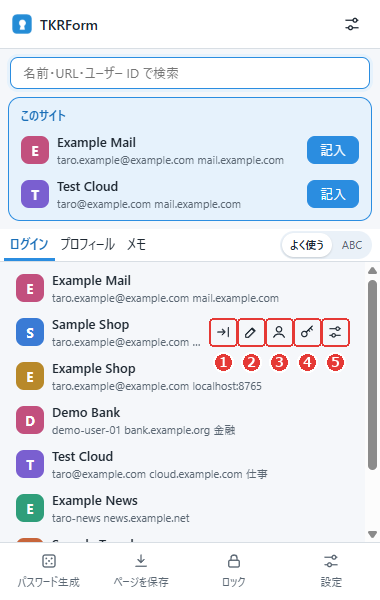
図 3-9 行の操作ボタン- ログイン（保存した URL を開いて記入し、送信します）
- 記入（今開いているページに記入します）
- ID をコピー
- パスワードをコピー
- エディタで開く
| ボタン | 動作 |
|---|
| ① | ログインします（保存した URL を開いて記入し、送信します）。 |
| ② | 今開いているページに記入します（送信はしません）。ページが一致しないときは記入せず、「開いて記入」を選べます。 |
| ③ 👤 ／ ④ 🔑 | ID ／ パスワードをコピーします。コピーした内容は 30 秒後に消去されます。 |
| ⑤ | エディタでそのログインを開きます。 |
右上の歯車アイコンを押すと、次のメニューが開きます。
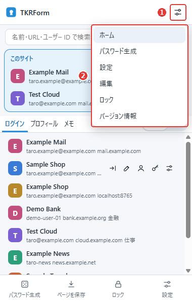
図 3-10 歯車メニュー- 歯車アイコンを押すと
- メニューが開きます
| メニュー | 動作 |
|---|
| ホーム | ログインをタイルで一覧するページを開きます（3.6）。 |
| パスワード生成 | ポップアップの中にパスワード生成の画面を出します。 |
| 設定 | 拡張の設定（自動記入・自動保存など）を開きます。 |
| 編集 | TKRForm アプリのエディタを開きます（4 章）。 |
| ロック | TKRForm をロックします。 |
| バージョン情報 | バージョンと連絡先を表示します。 |
3.5 パスワードの生成
会員登録やパスワード変更の画面で、新しいパスワードの欄をクリックし、候補メニューの「パスワードを生成」を選ぶと、生成パネルが表示されます。
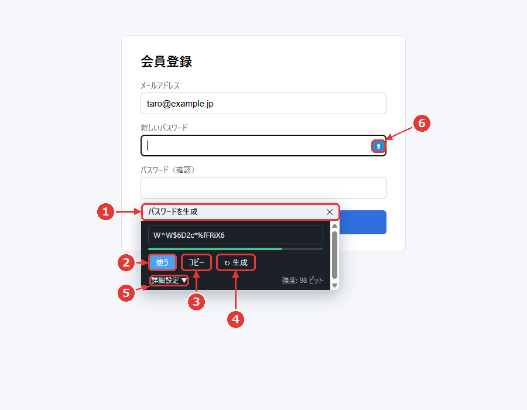
図 3-11 パスワード生成パネル- 見出しの帯。ドラッグで移動、× で閉じます。
- 「使う」で両方のパスワード欄に記入
- 「コピー」でクリップボードへ
- 「↻ 生成」で作り直す
- 「詳細設定」で文字数や記号を変更
- 入力欄の TKRForm アイコン
- 使う：新しいパスワードの欄と確認用の欄の両方に記入します。そのままフォームを送信すると、保存ダイアログが表示されます。
- コピー：生成したパスワードをコピーします。↻ 生成 で作り直します。
- 詳細設定 ▼：文字数、使う文字の種類、使う記号、パスフレーズ（単語の組み合わせ）を設定できます。サイトで使えない記号がある場合は「使う記号」から外してください。
- パネルは入力欄に重ならない位置に表示されます。上部の帯をつかんで動かすこともできます。
キーボードでは Alt+Shift+G でも開けます。ブラウザの外で使いたいときは、トレイのメニューの「パスワード生成器」を使います（図 3-12）。
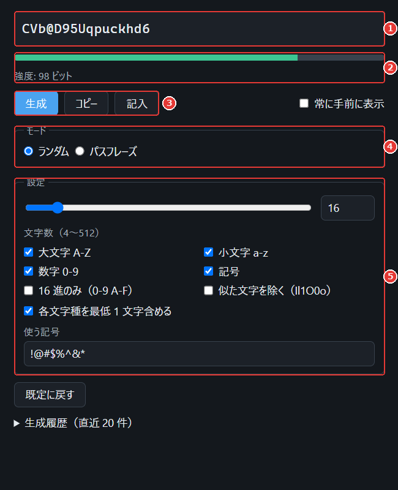
図 3-12 パスワード生成器（アプリ）- 生成されたパスワード
- 強さの目安
- 「生成」「コピー」「記入」
- ランダムかパスフレーズか
- 文字数・文字の種類・使う記号
3.6 ホーム
歯車メニューの「ホーム」を選ぶと、ログインをタイルで一覧するページが開きます。上部に「よく使う」ログイン、その下にすべてのログインが並びます。タイルを押すと、そのサイトを開いてログインします。右上の欄で検索もできます。
サイトのアイコン（初期設定はオフ）拡張の設定で「ホームにサイトのアイコンを表示する」をオンにすると、保存しているサイトへアイコンの画像を取りに行き（Cookie は送りません）、タイルに大きく表示します。オンにすると、保存しているサイトへ接続する通信が起きます。オフのときは通信せず、Chrome が持っているアイコンか、名前の頭文字を表示します。ホームの上の案内（「設定を開く」）からも設定できます。
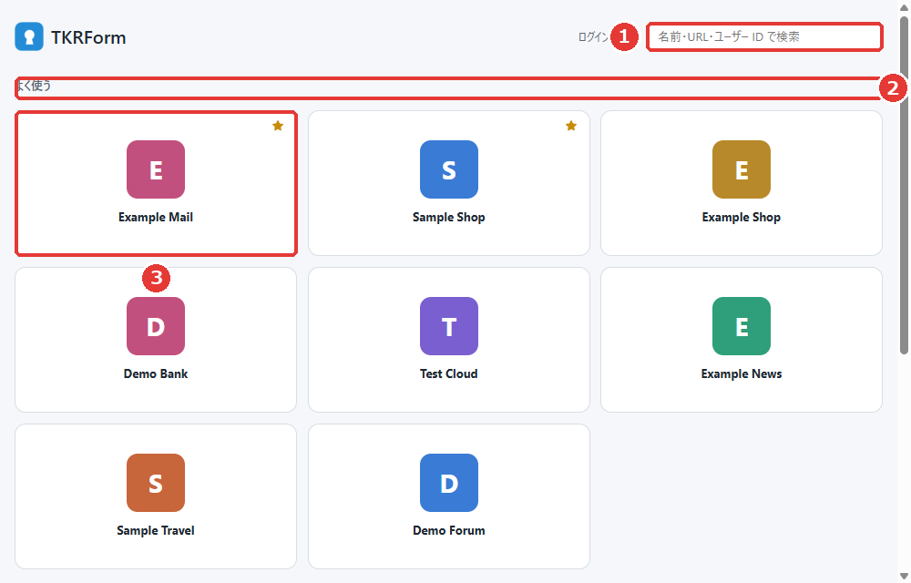
図 3-13 ホーム- 検索欄
- 見出し（「よく使う」と「すべてのログイン」）
- ログインのタイル。押すと、そのサイトを開いて記入します（頭文字の四角の色は、エディタ・ポップアップと同じです）
4. エディタ
保存したデータの確認・編集は、エディタで行います。トレイの TKRForm アイコンをダブルクリックするか、ポップアップの歯車メニューの「編集」で開きます。
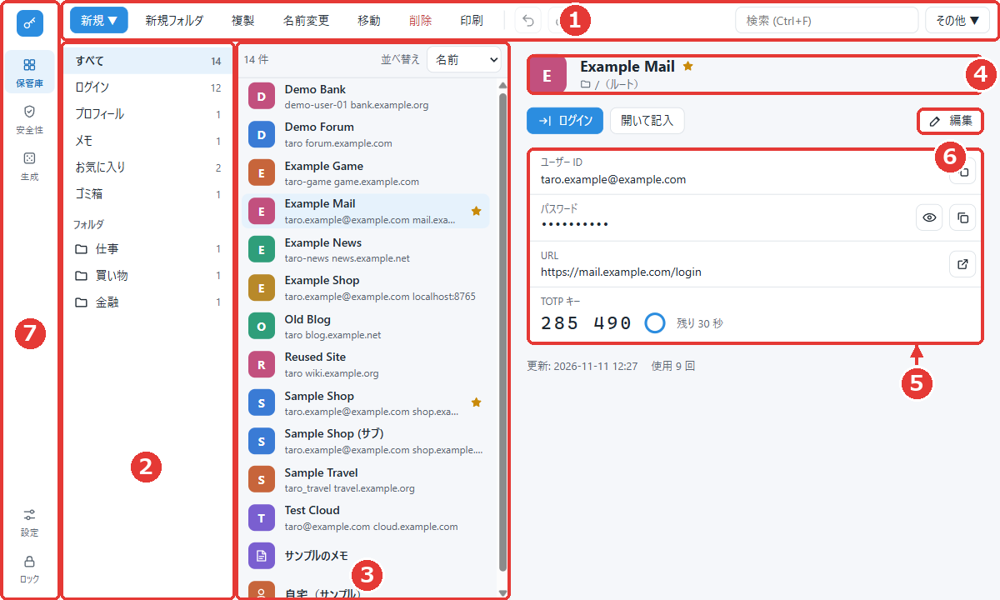
図 4-1 エディタ（ログインの詳細）- 操作ボタン。「新規」が主な操作で、ほかは複製・名前変更・移動・削除・印刷・元に戻す・やり直し・検索・その他
- 種類とフォルダで絞り込み
- 項目の一覧（頭文字の四角の色は、名前から決まります）
- 名前・お気に入り・フォルダ
- ユーザー ID・パスワード・URL・TOTP。表示とコピーのボタンがあります
- 「編集」を押すと、編集のフォームに替わります
- 左端の切り替え（保管庫・安全性・生成・設定・ロック）
| 場所 | 内容 |
|---|
| 左の一覧 | 種類（ログイン・プロフィール・メモ・お気に入り・ごみ箱）とフォルダで絞り込みます。 |
| 中央の一覧 | 項目の一覧です。「並べ替え」で名前順・更新日順などに変えられます。 |
| 右の詳細 | 選んだ項目の内容です。ログインは、まず見るだけの画面で出ます。「編集」を押すと編集のフォームに替わり、変更したら「保存」を押します（保存すると、見るだけの画面に戻ります）。 |
| 左端の切り替え | 保管庫・安全性（セキュリティセンター）・生成・設定・ロックを切り替えます。保管庫・安全性・設定は、同じウィンドウの中で画面が替わります。編集中の変更があるときは、替える前に確認が出ます。 |
| 上部のボタン | 新規（主な操作）、新規フォルダ、複製、名前変更、移動、削除、印刷、元に戻す／やり直し、検索（Ctrl+F）、その他（インポート・エクスポート・セキュリティセンター・設定など）。 |
ログインの詳細
ログインを選ぶと、まず見るだけの画面が出ます。ユーザー ID・パスワード（目のアイコンで表示、コピーのアイコンでコピー）・URL・TOTP のコードを確かめられます。「ログイン」で記入して送信、「開いて記入」で保存した URL を開いて記入します。「編集」を押すと、編集のフォームに替わります（図 4-1b）。
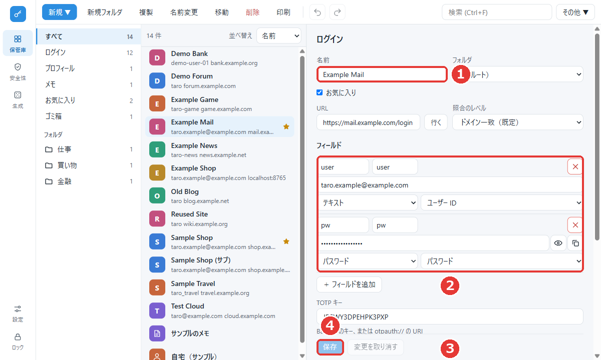
図 4-1b エディタ（編集のフォーム）- 名前・フォルダ・お気に入り
- 記入する入力欄の一覧（フィールド）
- 「詳細設定」（ふだんは閉じています）
- 変更したら「保存」
- URL ／ 照合のレベル：どのページで候補に出すかを決めます。通常は「ドメイン一致」のままで構いません。照合する URL の指定は、「詳細設定」にあります。
- フィールド：保存した入力欄の一覧です。名前・ID はページ側の欄の名前、値は記入する内容です。パスワードは、目のアイコンで表示、コピーのアイコンでコピーできます。
- 詳細設定：照合する URL、記入後に送信しない（記入だけしてログインボタンは押さない場合にチェック）、ブラウザのベーシック認証、多段ログインは、折りたたまれています。必要なときだけ開きます。
- TOTP キー：2 段階認証のキーを登録すると、確認コードの欄にコードを記入できます。QR コードの画像から読み込むこともできます。
フォルダの整理
- 項目を左のフォルダへドラッグ＆ドロップすると移動します。
- フォルダも、別のフォルダや「フォルダ」の見出しへドラッグして移動できます。
- 間違えたときは Ctrl+Z で元に戻せます。
削除とごみ箱
削除した項目はごみ箱に移り、30 日間残ります。左の一覧の「ゴミ箱」を選ぶと、削除した項目を確認できます（図 4-2）。
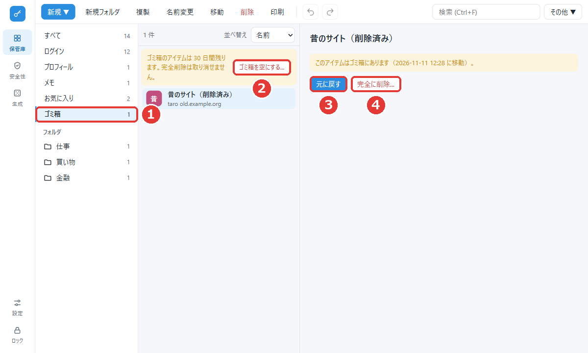
図 4-2 ごみ箱- 「ゴミ箱」を選びます
- ごみ箱を空にする（元に戻せません）
- 元の場所に戻す
- この項目だけ完全に削除する（元に戻せません）
- 元に戻す：項目を元のフォルダに戻します。
- 完全に削除...／ゴミ箱を空にする...：完全に削除します。確認が表示され、削除すると元に戻せません。
5. プロフィールとメモ
5.1 プロフィール
氏名・住所・電話番号・メールアドレス・会社・カードなどを登録しておくと、申し込みフォームや配送先の入力欄に一括で記入できます。
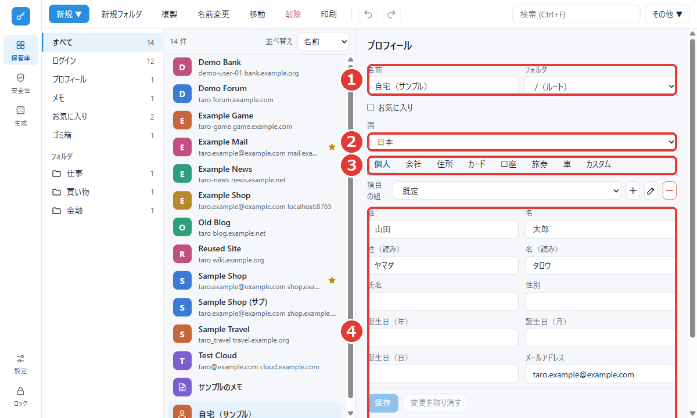
図 5-1 プロフィールの編集- 名前・フォルダ
- 国を選びます
- グループ（個人・会社・住所・カードなど）のタブ
- 各欄に入力します（＋で、別の住所やカードを追加できます）
- エディタの「新規 ▼」→「プロフィール」を選び、国（日本／米国）を選びます。
- 「個人」「住所」「会社」「カード」などのタブで、必要な欄だけ入力して保存します。
- 入力フォームのあるページで、ポップアップの「プロフィール」タブで、行の「記入」のボタン（図 3-9 ②）を押すと記入されます。記入できる欄が 3 つ以上あるフォームでは、入力欄の候補メニューにも表示されます。
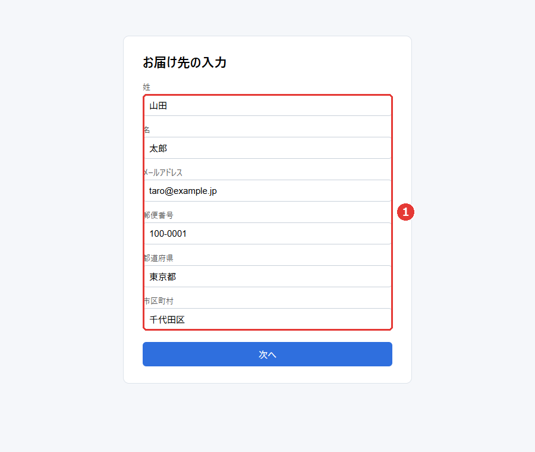
図 5-2 プロフィールを記入したフォーム- 氏名・メールアドレス・住所が、それぞれの欄に一度に記入されます。
5.2 メモ
Wi-Fi のパスワード、ソフトのライセンスキー、秘密の質問の答えなど、暗号化して保管したい文章を保存できます。エディタの「新規 ▼」→「メモ」で作成します。
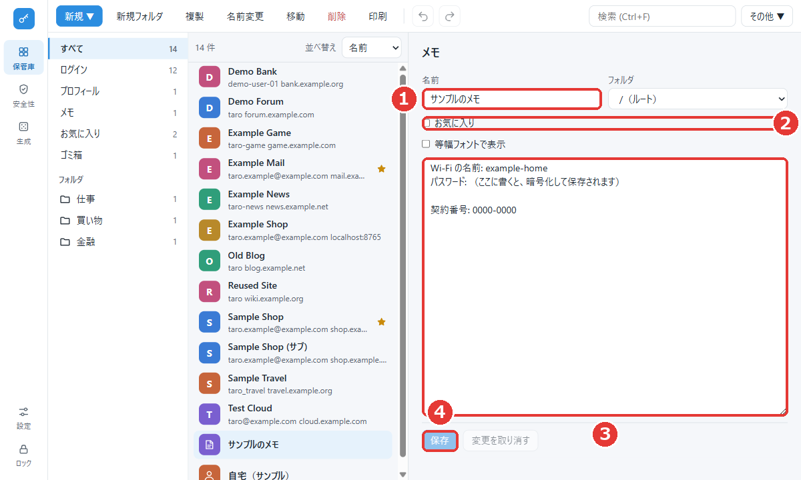
図 5-3 メモの編集- メモの名前
- 等幅フォントで表示（表やキーをそろえて見たいとき）
- 本文。暗号化して保存されます
- 変更したら「保存」
6. パスキー
パスキーは、パスワードの代わりに使える新しいログインの方法です。対応しているサイトでは、TKRForm にパスキーを保存して、パスワードなしでログインできます。
6.1 パスキーの登録
- サイトのアカウント設定などで「パスキーを作成」「パスキーを追加」を選びます。
- ページ上に「パスキーを TKRForm に保存」のダイアログが表示されます（図 6-1）。アカウント（①）を確かめて「保存」を押します（②）。
- 本人確認として Windows Hello（またはマスターパスワード）の確認が表示されたら、確認します。
- 保存したパスキーは、エディタのログインの詳細に表示されます（一覧では 🔑 が付きます）。
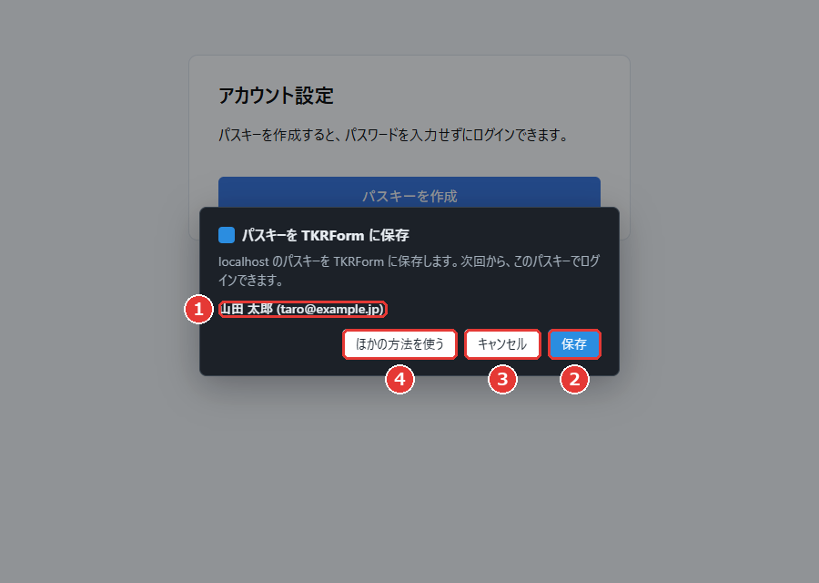
図 6-1 パスキーの保存- パスキーを作るアカウント
- TKRForm に保存する
- パスキーを作らない
- Windows や Chrome など、ほかの場所に保存する
Windows や Chrome にパスキーを保存したい場合は、ダイアログで「ほかの方法を使う」を選びます（④）。
6.2 パスキーでのログイン
サイトでパスキーでのログインを選ぶと、TKRForm に保存したパスキーの候補が表示されます。選ぶとログインできます。ID の入力欄にパスキーの候補が表示されるサイトもあります。
パスキーを削除するときの注意エディタでパスキーを削除すると、そのサイトにパスキーでログインできなくなります。サイト側にパスワードなど別のログイン方法があることを確かめてから削除してください。
7. セキュリティセンター
保存しているパスワードに問題がないかを調べます。トレイのメニュー、またはエディタの「その他 ▼」から開きます。
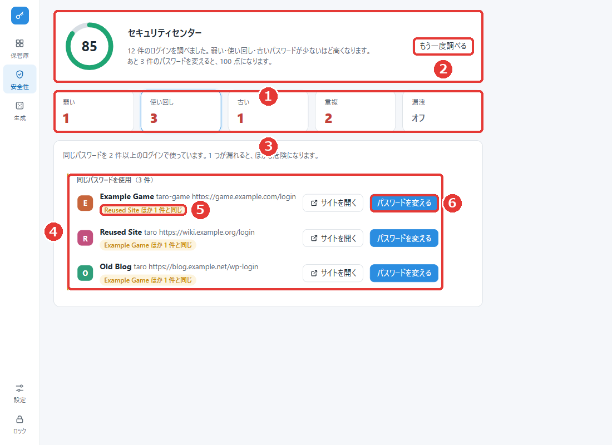
図 7-1 セキュリティセンター- 総合のスコア（0〜100）と、あと何件変えると 100 点になるか
- もう一度調べる
- 問題の種類ごとの件数の箱。押すと、その種類に絞り込みます
- 該当するログイン（頭文字・名前・ID とサイト）
- 理由（「Example Game ほか 1 件と同じ」「強度 38 ビット」「2 年前から変更なし」など）
- 「パスワードを変える」で、保管庫の画面でその項目を編集の状態で開きます。「サイトを開く」で、そのサイトを開けます
| 件数の箱 | 内容 |
|---|
| 弱い | 短い・単純で、推測されやすいパスワード（強度 50 ビット未満）。 |
| 使い回し | 同じパスワードを複数のサイトで使っているもの。同じパスワードごとにまとめて表示します。 |
| 古い | 365 日以上変更していないパスワード。 |
| 重複 | 同じサイト・同じ ID のログインが複数あるもの。 |
| 漏洩 | 過去に漏洩したパスワードに含まれていないかを確認します（既定はオフ）。オンにすると、パスワードそのものではなく、パスワードから計算した値の一部だけを外部の確認サービスに送ります。 |
上部の数字（0〜100）は総合のスコアで、問題が少ないほど高くなります。各項目の行からエディタを開いて、パスワードを変更してください。
8. 設定
トレイのメニューの「設定...」（図 1-1 ④）で開きます。変更は、その場で保存されます（「保存」ボタンはありません）。左の一覧で、設定の種類を選びます。
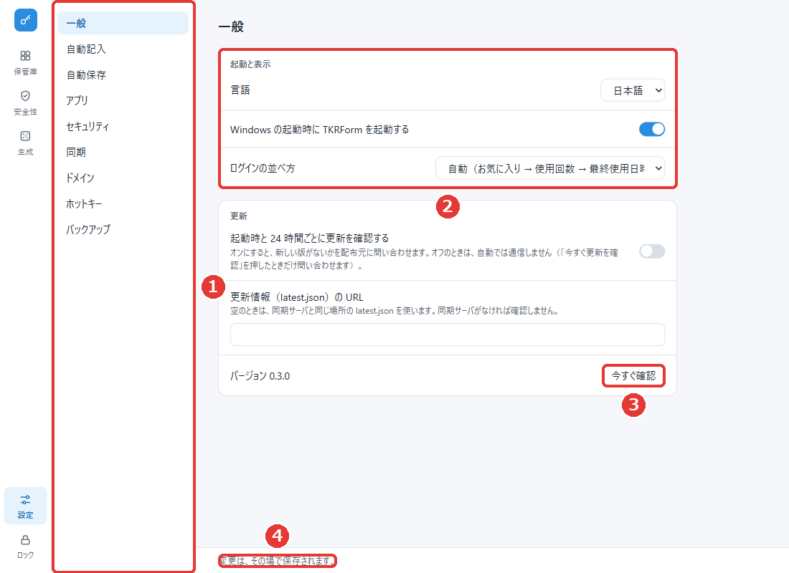
図 8-1 設定（一般）- 設定の種類（左の一覧）
- 見出しつきの枠（起動と表示・更新など）。行ごとに説明があり、オン・オフはスイッチ、選ぶものは右の欄
- バージョンの表示と「今すぐ確認」（更新の枠の中）
- 変更は、その場で保存されます（「保存」ボタンはありません）
| 分類 | 主な設定 |
|---|
| 一般 | 「起動と表示」の枠（言語、Windows の起動時に起動する、ログインの並べ方）と、「更新」の枠。更新の確認（初期設定はオフ。オンにすると、新しい版がないかを配布元に問い合わせます。「今すぐ更新を確認」は、押したときだけ問い合わせます） |
| 自動記入 | 候補の出し方（しない／提案する／1 件なら自動）、入力欄の候補メニュー、ベーシック認証、パスキーの保存 |
| 自動保存 | 保存の仕方（しない／提案する／自動）、保存しないサイト |
| アプリ | Windows のアプリのログイン画面への記入 |
| セキュリティ | 自動ロックの条件と時間、Windows Hello、マスターパスワードの変更、クリップボードの消去 |
| 同期 | 同期サーバの設定（使わない場合は不要です） |
| ドメイン | 同じサイトとみなすドメイン（例: example.co.jp と example.com） |
| ホットキー | 検索・ロックなどのショートカットキー |
| バックアップ | 自動バックアップ、保存先、復元、全初期化 |
8.1 Windows Hello を使う
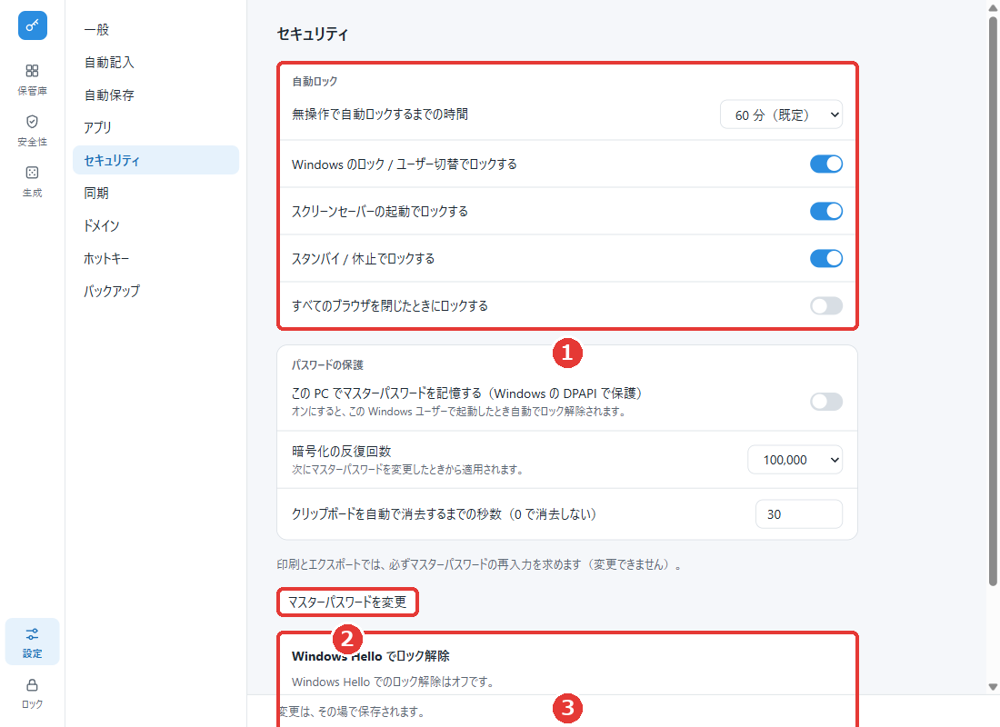
図 8-2 設定（セキュリティ）- 自動でロックする条件と時間
- マスターパスワードの変更
- Windows Hello の有効化
- 設定の左の一覧で「セキュリティ」を選びます。
- 「Windows Hello でロック解除」の「Windows Hello を有効にする」を押します。
- Windows Hello の確認（顔・指紋・PIN）を行います。「有効にしました」と表示されれば完了です。
以後、ログイン画面やポップアップを開くと、自動で Windows Hello の確認が始まります。キャンセルした場合は、マスターパスワードでも解除できます。
マスターパスワードを変更したときマスターパスワードを変更すると、Windows Hello の登録は解除されます。もう一度有効にしてください。
9. バックアップと別の PC への移行
9.1 自動バックアップ
TKRForm は毎日、保管庫を自動でバックアップします（既定で 10 世代）。バックアップは暗号化されたままのファイル（.tkb）で、開くにはマスターパスワードが必要です。
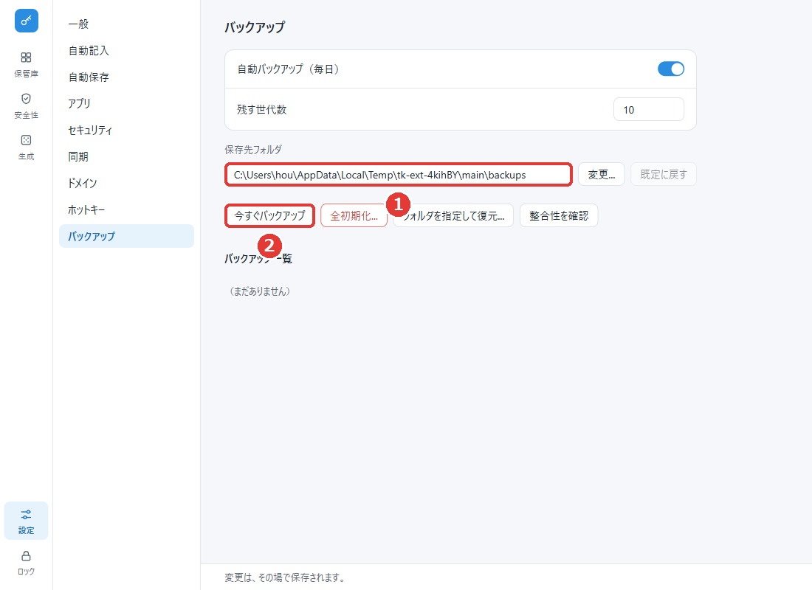
図 9-1 設定（バックアップ）- バックアップの保存先フォルダ
- 今すぐバックアップ・全初期化・フォルダを指定して復元・整合性を確認
- 保存先フォルダ：「変更...」で、外付けドライブや NAS などに変えられます。PC の故障に備えて、別のドライブに保存することをおすすめします。
- 今すぐバックアップ：その場でバックアップを作ります。
- フォルダを指定して復元...：他の場所にあるバックアップを、復元の一覧に加えます。
- 整合性を確認：保管庫のファイルが壊れていないかを調べます。
- 全初期化...：保管庫と設定をすべて消して、初めの状態に戻します。マスターパスワードの入力が必要で、元に戻せません。
9.2 別の PC へ移す
- 今の PC で「今すぐバックアップ」を押し、できた
.tkb ファイルを USB メモリなどで新しい PC へ移します。
- 新しい PC に TKRForm をインストールし、セットアップを進めます。ここで決めるマスターパスワードは、復元すると使われなくなるので、仮のもので構いません。
- 設定の「バックアップ」で「フォルダを指定して復元...」から
.tkb のあるフォルダを選びます。「バックアップ一覧」に出たバックアップの「復元...」を押します（図 9-2 ③）。保管庫がバックアップの内容に置き換わり、ロックされた状態になります。
- 今までと同じマスターパスワードでロックを解除します。
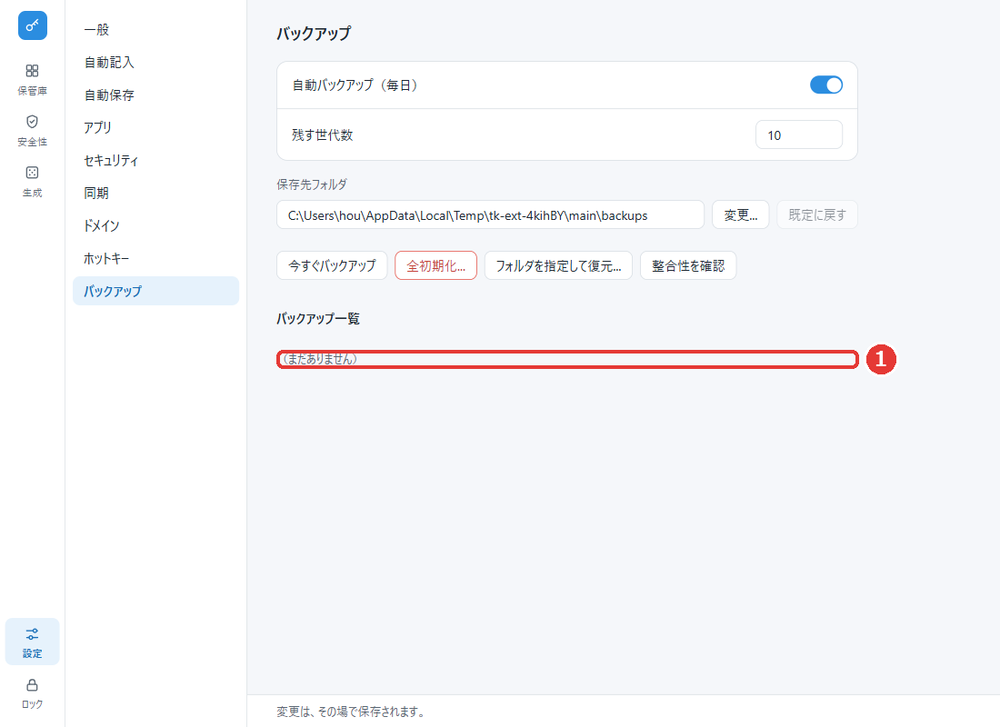
図 9-2 バックアップ一覧- バックアップのファイル（作成した日時と大きさ）。「復元」でこのバックアップに戻します
ログイン・プロフィール・メモ・パスキーがすべて移ります。Windows Hello は PC ごとの設定なので、新しい PC でもう一度有効にしてください。
エクスポートとの違いエディタの「その他 ▼」→「エクスポート...」で CSV にも書き出せますが、CSV は暗号化されず、パスキーも含まれません。PC の移行には .tkb のバックアップを使ってください。
10. 困ったときは
| 症状 | 対処 |
|---|
| ポップアップに「TKRForm アプリに接続できません」と出る | TKRForm アプリが起動しているか、トレイのアイコンを確認してください。起動していなければ、スタートメニューから TKRForm を起動します。それでも直らない場合は、chrome://extensions（Edge は edge://extensions）で TKRForm の拡張のスイッチをいったんオフにしてからオンに戻すか、ブラウザを再起動してください（ストアを使わずに読み込んだ場合は、再読み込み（↻）でも構いません）。 |
| 保存ダイアログや候補メニューが出ない | ロックを解除しているか確認してください。そのサイトで「このサイトでは今後しない」を選んでいないか、設定の「自動保存」の「保存しないサイト」を確認してください。ページを再読み込みすると出る場合もあります。 |
| 記入されない欄がある | ポップアップの「フォームの入力内容を保存」で、すべての欄を保存し直してください。エディタのフィールドの一覧で、欄の名前や値を直すこともできます。 |
| Windows Hello の確認が出ない | 設定の「セキュリティ」で Windows Hello が有効になっているか確認してください。Windows の「サインイン オプション」で PIN などを設定していない PC では使えません。 |
| 画面が白いまま表示されない | 画面の上にマウスを乗せると表示される場合があります。直らない場合は、TKRForm をトレイから終了して起動し直してください。 |
| インストール時に「PC が保護されました」と出る | 「詳細情報」→「実行」で進めてください（2.1）。 |
| マスターパスワードを忘れた | 保管庫を開く方法はありません。新しく保管庫を作る場合は、設定の「バックアップ」→「全初期化...」を行うか、TKRForm を再インストールしてください。 |
解決しない場合は、タカラシスコム（https://tkrs.jp/）までお問い合わせください。
11. アンインストール
- Windows の「設定」→「アプリ」→「インストールされているアプリ」で tkrform を選び、「アンインストール」を押します。
- 「ユーザーデータ（保管庫・設定・バックアップ）も削除しますか？」と表示されます。
- いいえ（既定）：データを残します。再インストールすると続きから使えます。
- はい：データを完全に削除します。元に戻せません。
- ブラウザの拡張は、
chrome://extensions（Edge は edge://extensions）で「削除」を押して取り除きます。
付録 ショートカットキーとデータの保存場所
ショートカットキー
| キー | 動作 | 使える場所 |
|---|
| Alt+Shift+L | ポップアップを開く | ブラウザ |
| Alt+Shift+F | いちばん候補の高いログインを記入 | ブラウザ |
| Alt+Shift+G | パスワード生成パネルを開く | ブラウザ |
| Ctrl+Alt+S | 検索 | Windows 全体 |
| Ctrl+Alt+L | ロック | Windows 全体 |
| Ctrl+Alt+A | 前面のアプリのログイン画面を取り込む | Windows 全体 |
| Ctrl+F ／ Ctrl+Z | 検索 ／ 元に戻す | エディタ |
ブラウザのキーは chrome://extensions/shortcuts で、Windows 全体のキーは設定の「ホットキー」で変更できます。
データの保存場所
| データ | 場所 |
|---|
| プログラム | C:\Users\（ユーザー名）\AppData\Local\Programs\tkrform |
| 保管庫・設定 | C:\Users\（ユーザー名）\AppData\Local\tkrform |
| 自動バックアップ（既定） | 上の保管庫のフォルダの中の backups（設定で変更可） |
記載の会社名・製品名（Windows、Windows Hello、Google Chrome、Microsoft Edge、RoboForm、1Password、LastPass、Bitwarden など）は、各社の商標または登録商標です。TKRForm はこれらの会社とは関係ありません。